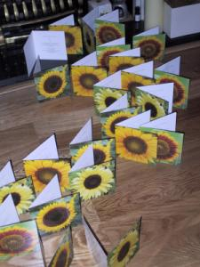

Another reasonably successful weekend. We got the younger pageboy's waistcoat bought, and also got our little bridesmaid's dress and shoes bought. And more importantly they met each other and didn't fight or anything 
Sunday, June 23, 2002Full marks to M&S, they used their "Stock locator" service to track us down 3 more ties. They were found in Truro and Rich had to call the store up and organise for payment and for them to be sent to us. He did, and they arrived and so we finally have 4 ties. Woohoo!
Posted by Jane at 9:14 AM
Tuesday, June 18, 2002I've found out today that the neck tie we've found for the wedding is called "the great escape". Maybe not such a good name for a wedding tie. Anyway, I found the name because I'm hunting for three more (best man and two fathers) and of course the shop has sold out...
Posted by Richard at 2:24 PM
Sunday, June 16, 2002
We're almost ready to send out our postal invites now although we still have some work to do on the electronic ones.
Posted by Jane at 6:59 PM
Thursday, June 13, 2002Another reasonably successful weekend. We got the younger pageboy's waistcoat bought, and also got our little bridesmaid's dress and shoes bought. And more importantly they met each other and didn't fight or anything
Posted by Jane at 7:47 PM
Tuesday, June 11, 2002We went and did our wedding gift list scanning this evening. It was good fun and was very easy to spend a lot of other people's money
Our list is with Debenhams and we set it up at the Brighton store. There were a few things we wanted to look for that we couldn't find so we might have to add a few things from one of the larger Debenhams stores next time we're near one.
If you want to see what is on the list then go to Debenhams, click on "Weddings", and then click on "Browse and buy from a wedding list" and enter 855291 as the wedding number.
Posted by Jane at 11:27 PM
Monday, June 10, 2002I've just filled in my passport application form so that it can be sent to Sue (our vicar) to be validated. There was a subtle problem with my first attempt, I signed it in my usual name and not my new name. Oops.
Posted by Jane at 8:14 PM
Friday, June 07, 2002We did some work on the postal invitations yesterday, and today I printed them out at work. We have a guillotine here, and my boss decided he was concerned I was going to chop my fingers off and so took over and cut them all up for me. What a great place to work
Posted by Jane at 1:23 PM
Thursday, June 06, 2002What a great day, not only did England just beat Argentina at football, but we've just been and collected my engagement ring. All sorted out now. It's been remade in platinum at no cost to us and looks just like it did. I'm very pleased with it and it feels good to have it back. The service we've received has been really good and I wouldn't hesitate to use Sarah Finch jewellers again.
Posted by Jane at 3:30 PM
I just had a quick look at hitched to see if I'd missed anything in the last few days, and came across this quiz. It's a "Wedding Date Predictor" and my results are:
YOU ARE CLOSE to finding "the one!" We have carefully calculated your responses according to our scientific formula and harmonized the results to the Venutian lunar calendar. But don't get your hopes up to hear those wedding bells soon, because your bridesmaid days aren't over just yet.
YOU WILL BE MARRIED BY: Saturday, June 24, 2006Scientific formulae??? Venutian lunar calendar??? yeah, right
Posted by Jane at 8:46 PM